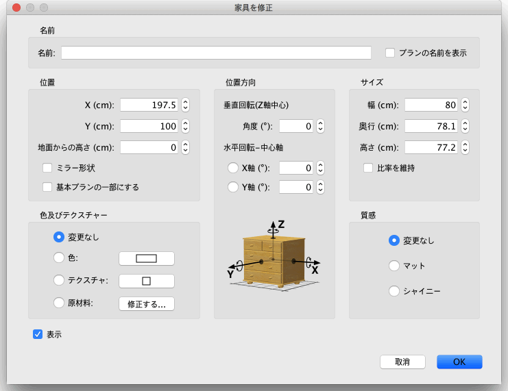

| 家具を編集 | |||
マウスまたはメニューの 家具 > 修正... から間取りの家具の位置・
サイズ・高度
および角度を編集をして下さい。 1つ の家具を プラン上で選択した場合、その選択した家具の各角に表示される4つの指標の内1つでサイズ、 高度または角度を変更することができます。
|

|
マウスポインタがこれらの角の1つにある場合、それは選択した家具に一致する属性の角の変更を
ドラッグ&ドロップして示すことができるために変更されます。 マウスボタンを押している間、
ツールヒント
は編集属性の値を表示しています。 その間取りプランで編集したい家具または家具リストから家具をダブルクリックもしく家具を選択した後に、メニューの 家具 > 修正... を選択して表示されるこの枠のおかげで 編集できます。  家具の枠では、家具の名前・横軸(X)および中心の縦軸(Y)を変更することができ、
床から下部の高度・幅・奥行・高さ・色・表示・回転角度、そして名前をプランで表示するべきかどうかは、
3Dモデルの形状を反映させなければならない
必要があります。 |
|